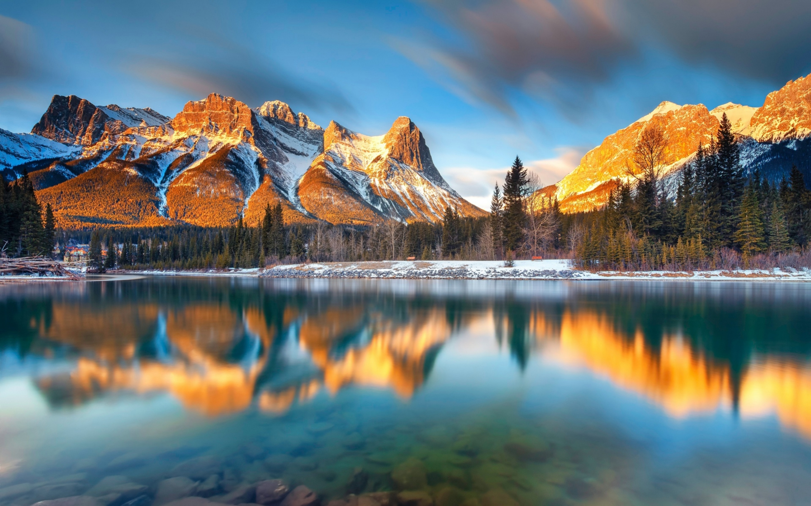

Canada, the second-largest country in the world by land area, is known for its vast and diverse landscapes, ranging from the Rocky Mountains to the Arctic tundra. The country is celebrated for its multicultural cities like Toronto, Vancouver, and Montreal, which are hubs of cultural and economic activity. With a population of approximately 38 million, Canada enjoys a high standard of living and is recognized for its strong commitment to environmental conservation and social welfare.
|  |
Top Attractions in Canada
- Banff National Park
- Niagara Falls
- Vancouver Island
- Toronto's CN Tower
- Old Quebec City
- Whistler Blackcomb